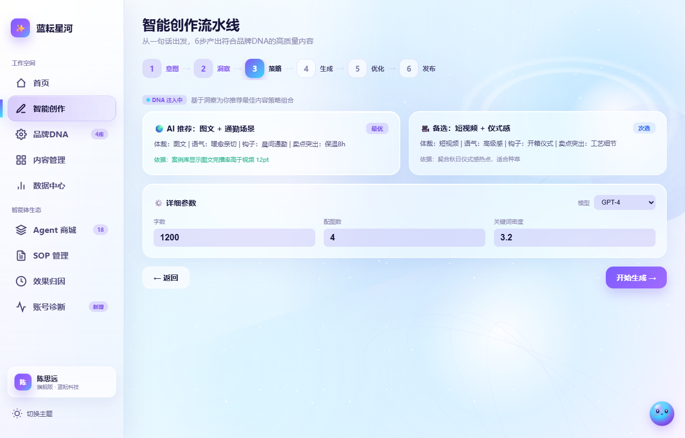
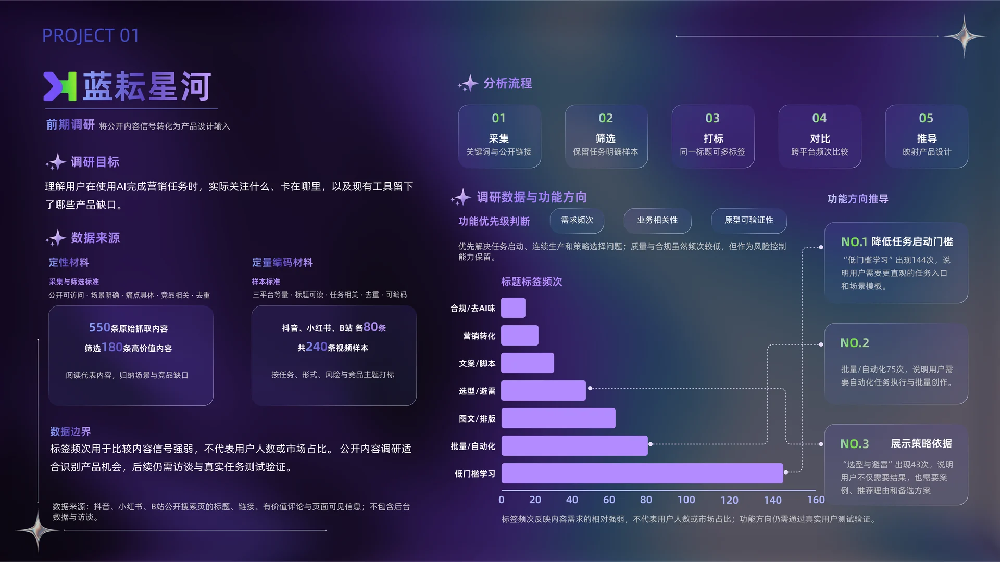
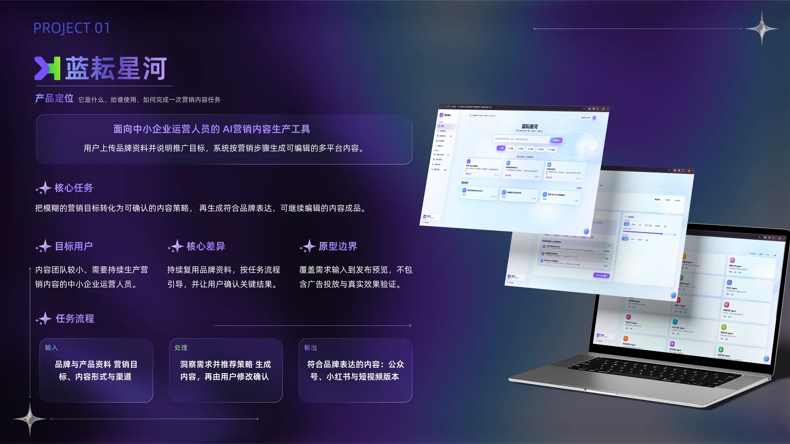
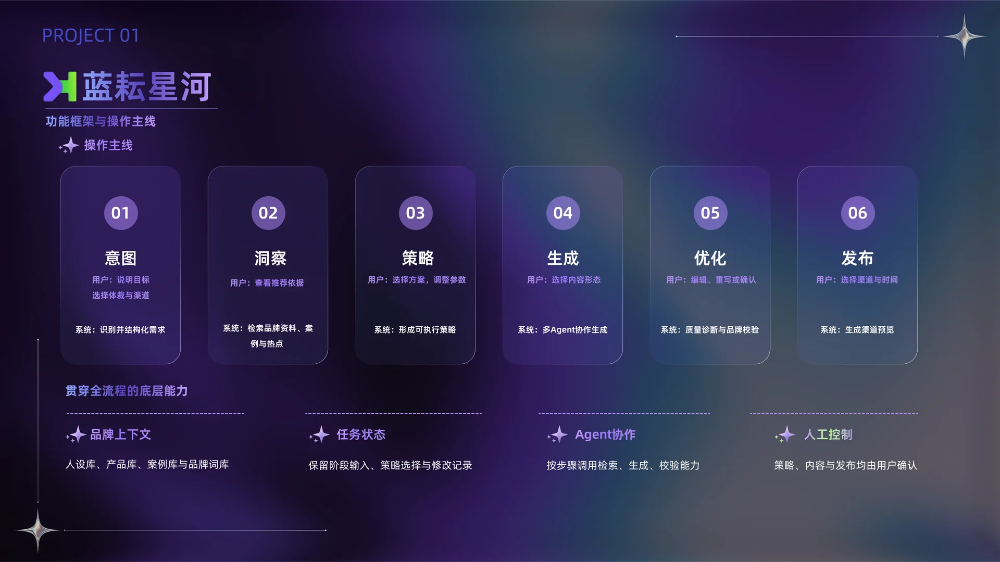
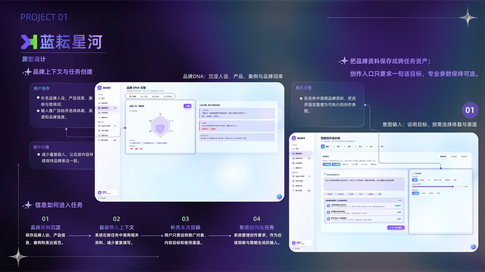
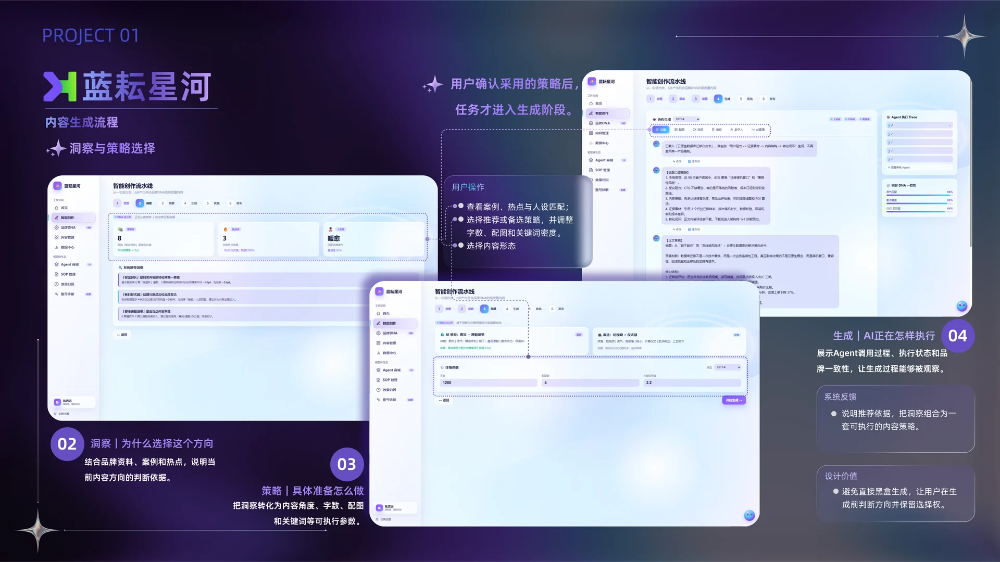
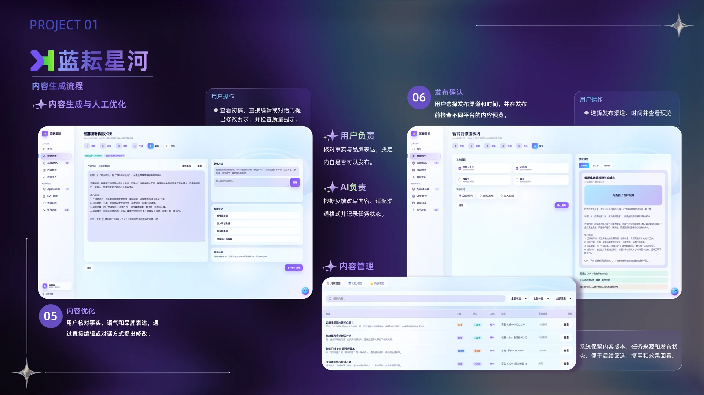
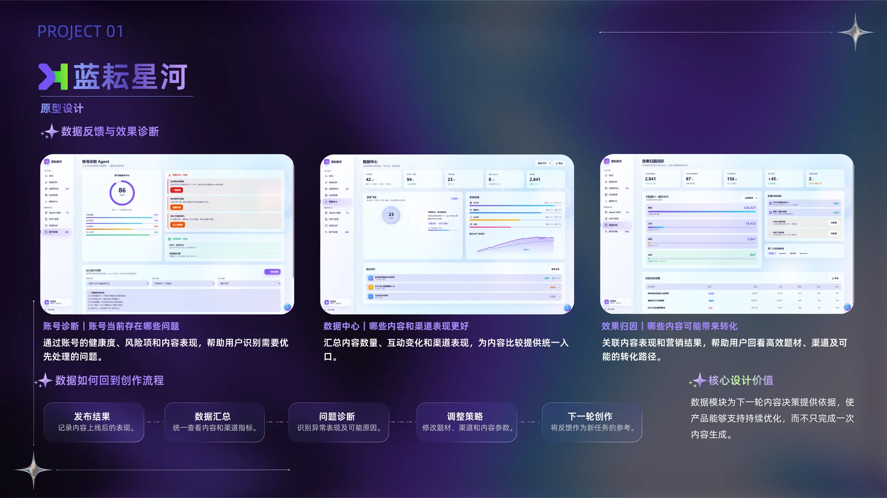
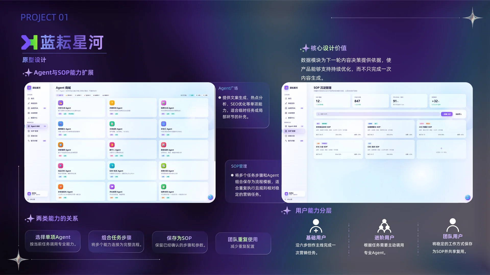

低门槛学习
说明用户需要直观的任务入口、场景模板与示例。

把品牌资料与营销目标带入同一条任务链：查看依据、选择策略、修改内容，最后确认渠道预览。

说明用户需要直观的任务入口、场景模板与示例。
高频出现表明持续生产与批量执行值得优先验证。
用户不只需要结果，也需要推荐理由、案例与备选方案。
标签频次只反映公开内容中的需求信号强弱，不代表用户人数或市场占比；后续仍需要访谈与真实任务测试验证。
先确认内容策略，再生成符合品牌表达的内容。
按任务流程引导，并让用户在关键节点确认结果。
需求输入、策略选择、生成、优化与渠道预览。



集中保存人设、产品信息、案例和品牌词库。
根据任务调用相关资料，用户只需补充本次目标。
一句话即可启动，体裁、渠道和品牌强度保持可调。

把洞察组合成内容方向，避免用户面对“黑盒答案”。
在生成前确认字数、形式、关键词和品牌强度。
呈现 Agent 调用、执行进度与品牌一致性。



无需理解复杂配置即可完成一次内容生产。
针对热点、SEO、选题等局部任务补充能力。
把稳定的方法与参数沉淀为可重复使用的流程。
用公开内容信号梳理核心需求，形成产品框架和桌面端交互方案。
通过目标用户访谈与任务测试，验证任务入口、策略解释和编辑成本。
建立品牌一致性、事实准确性、内容质量与渠道表现的评测指标。